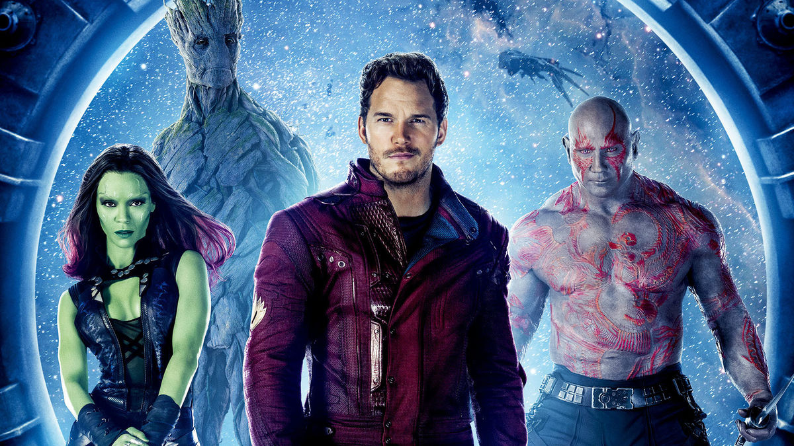
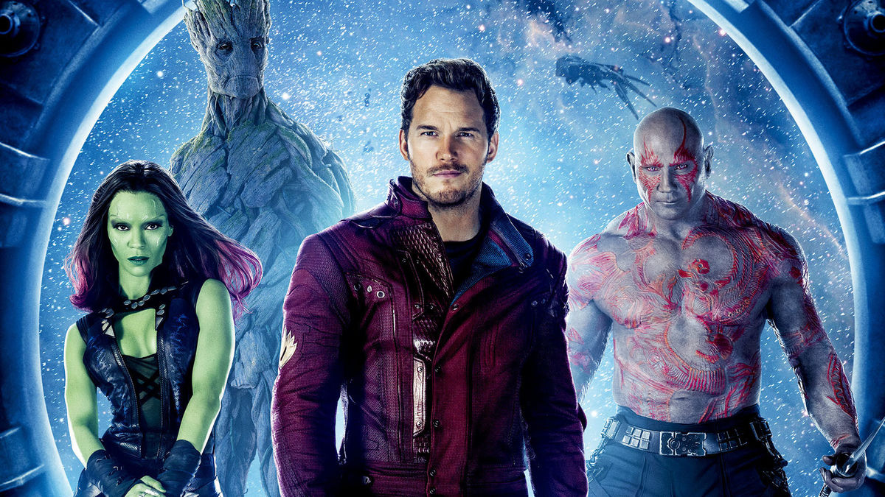

Welcome
Thank you for taking the time to view my website. Still a work in progress, I am very much proud of what has been accomplished in this short time. Please feel free to browse and paruse my sweet newbie code. This has been a challenging but sweet experience. I plan to continue to enhance this page and practice new found skills. I am truly excited and I hope you enjoy.
Galaxy Fans Unite
Somedays you just want to get off work and mello out to some Awesome jams! I created this space,for Galaxy fans alike and we welcome all to join in the vibes of all that is Guardians of the Galxay!. We hope you will be able to connect through meetups as well as through some really talented artists who also love the Guardians. Feel free to pop on over with the links below. Also, check out the individual pages of our favorite heros.
New and Exciting
Yes, you heard correctly. They are coming back to do it again. Not only did Thanos put a major damper on our love for the Avengers, but we just hadn't heard anything about GOTG3. But, back to jam out, save the galaxy, ours truly we have lift off for a third movie. How could they really ever top what has already been done. I seriously shed a few tears when Groot made the handle for Stormbreaker.... Chillls, I know Avengers reference but what else have I had, dramatics!! Any way, stay tuned for more info as I get it you will have it!
 

Are you a superfan? Take the quick quiz!
A true super fan doesn't need 100 or thousands of triva questions. You either are or you aren't a superfan, but that's okay we still love you!!!! Take the short quiz we love doing things like this, keeps it interesting. I'll add a feature so that you guys can suggestions questions, maybe even an open chat. Who knows the galaxy is literally the limit here.